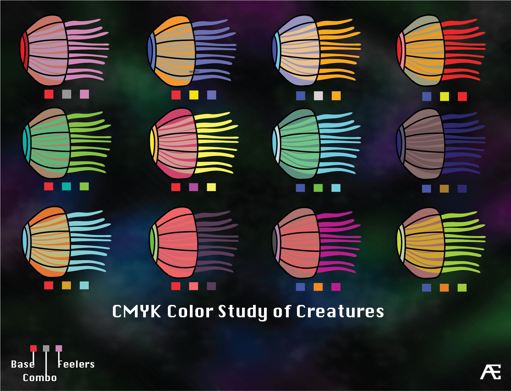

Ether Flux
2D Sidescroller Shooter for Mobile App Development
Once again my love for games and game development rears it's head, this time in the form of a sidescrolling shooter created in Xcode, Photoshop, and Art Text 2. I love Sci-Fi themed stuff, from movies, to anime, to games. So as soon as I saw a really nice Side Scroller walkthrough from the great guys at Pixel Nest, I knew I had to give it a shot.
One of the cool things that started popping up once the iPhone was released, were games that used the accelerometer within the phones as a control system. I was never such a fan of this, partly because I'm bad, but also because I find the controls not as crisp as when you used a traditional 2 thumb setup
I countered this by using a great open source control scheme called the Khaz controller to be able to better manipulate the player character.
Project Highlights

In Game Shots
Some Ship Designs
Creating many different ships was one of the things I really wanted to do for this project. Ideally the user would be able to choose from one of the 6 different ships when they start up the game. Unfortuneately I wasn't able to include that system, but I did create the ships themselves, as well as a Power Level chart which is shown below. I have included 3 of the ships below, can you match up the names to the ships?
Which ship is which? Check to see if the names work with the designs
- Viper
- Reaper
- Paladin

Power Levels
Six different ships means six different combinations of stats to make each ship stand out from the others.
The top two ships were made to be the introductory ships, while the middle two ships were mid game level skills. Every ship has their advantages and disadvantes.
Even the final ships which would unlock at the later stages of the game have their plusses and minuses. The Reaper (red & black) has strong power & speed, but week armor, while the Ifrit has mid range power and speed, and strong armor.
Which ship would you use?
Enemy Design
I made this color combination chart to try to give some examples of some color combinations that would work well for enemies. The issue I was having was that the enemies would sometimes blend into the background, and could be confused with background elements such as planets and suns
Of course there is always more to come as I have lot of assets left over. As I work on this site more and more information will be posted here, please feel free to stop by and check for updates!